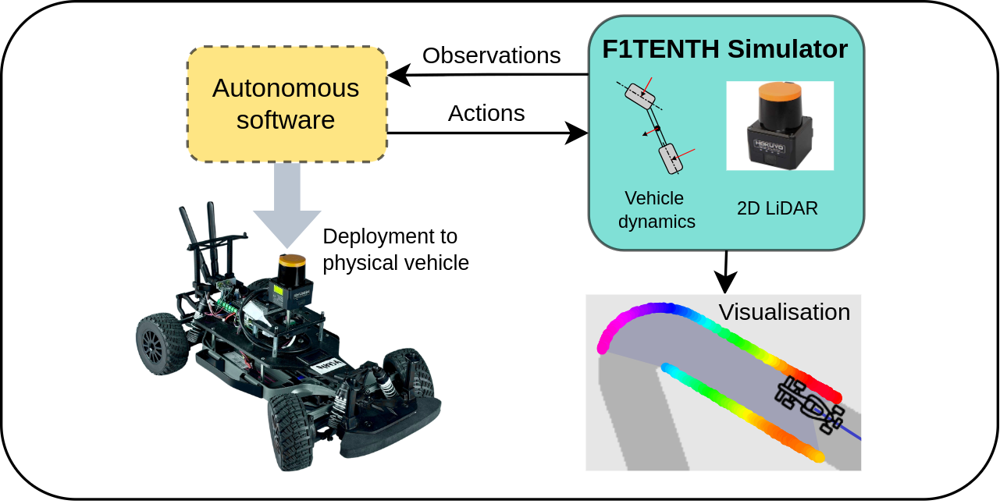
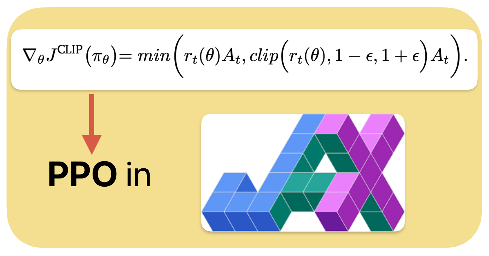
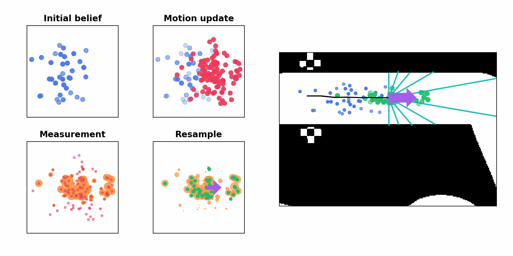
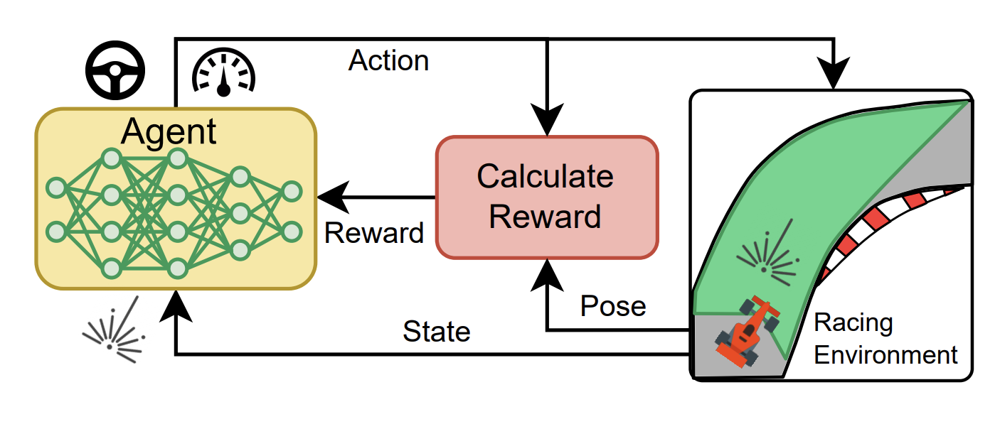

Projects I have worked on at various points in my life.
Coding Projects

A project to benchmark common algorithms for F1Tenth autonomous racing. I implemented trajectory optimisation and tracking, model predictive control, and end-to-end reinforcement learning methods.

The proximal policy optimisation algorithm using the JAX framework. I developed this project to learn how the JAX ecosystem can be used for high-performance code.

Personal implementations of the DQN, PPO, DDPG, A2C, SAC and TD3 algorithms in PyTorch. The repo includes a document summarising the algorithms and code components.

Implementations of the Linear Kalman Filter (LKF), Extended Kalman Filter (EKF), Unscented Kalman Filter (UKF) and Particle Filter (PF)

A tutorial style example of how to use end-to-end reinforcement learning (TD3 and SAC algorithms) for F1Tenth autonomous racing.